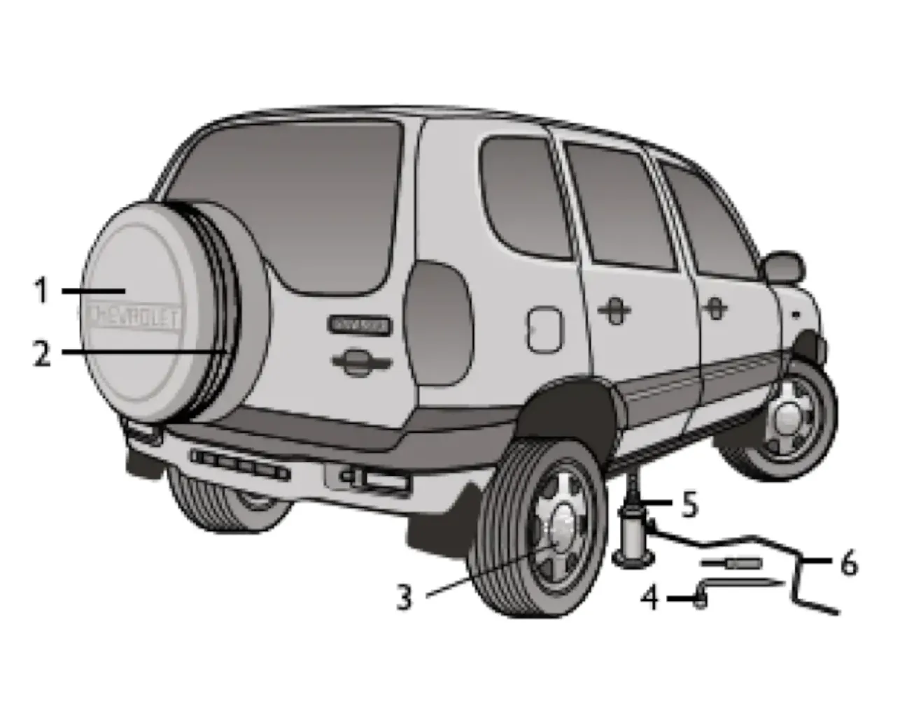

ТЕХНИЧЕСКОЕ ОБСЛУЖИВАНИЕ И ТЕКУЩИЙ РЕМОНТ АВТОМОБИЛЯ
Замена колес
замена колесадомкратзапаскагайки
Для замены колёс:
- Затормозите автомобиль стояночным тормозом, включите первую или заднюю передачу в коробке передач, убедитесь, что рычаг управления раздаточной коробкой не находится в нейтральном положении.
- По возможности примите дополнительные меры против самопроизвольного скатывания автомобиля, установив спереди и сзади колёса, наиболее удалённые от заменяемого, предметы, препятствующие его качению.
- Достаньте домкрат, который крепится эластичным ремнём в багажнике на арке заднего левого колеса, насос и сумку с инструментом. Демонтируйте запасное колесо.
- Снимите защитную крышку заменяемого колеса и ослабьте на один оборот комбинированным ключом пять гаек крепления колеса.
- Установите домкрат ближе к заменяемому колесу так, чтобы при выдвижении винта его пята упиралась в подштамповку специального кронштейна на днище кузова.
- Вращайте рукоятку домкрата по часовой стрелке до тех пор, пока колесо не окажется приподнятым на несколько сантиметров над землёй, достаточных для установки запасного колеса.
- Отверните гайки и снимите колесо. Установите запасное колесо и равномерно затяните гайки крепления.
- Вращением рукоятки против часовой стрелки опустите автомобиль.
- Подтяните гайки, проверьте и доведите до нормы давление воздуха в шине.
- Закрепите заменённое колесо на кронштейне двери задка и уложите домкрат и инструмент на свои штатные места.

Предупреждение / внимание:
Неправильно установленный домкрат может привести к повреждению автомобиля или его падению с домкрата. Следите за тем, чтобы пята домкрата точно упиралась в подштамповку специального кронштейна на днище кузова. Находиться под автомобилем, приподнятым домкратом, запрещено.
Неправильно установленный домкрат может привести к повреждению автомобиля или его падению с домкрата. Следите за тем, чтобы пята домкрата точно упиралась в подштамповку специального кронштейна на днище кузова. Находиться под автомобилем, приподнятым домкратом, запрещено.